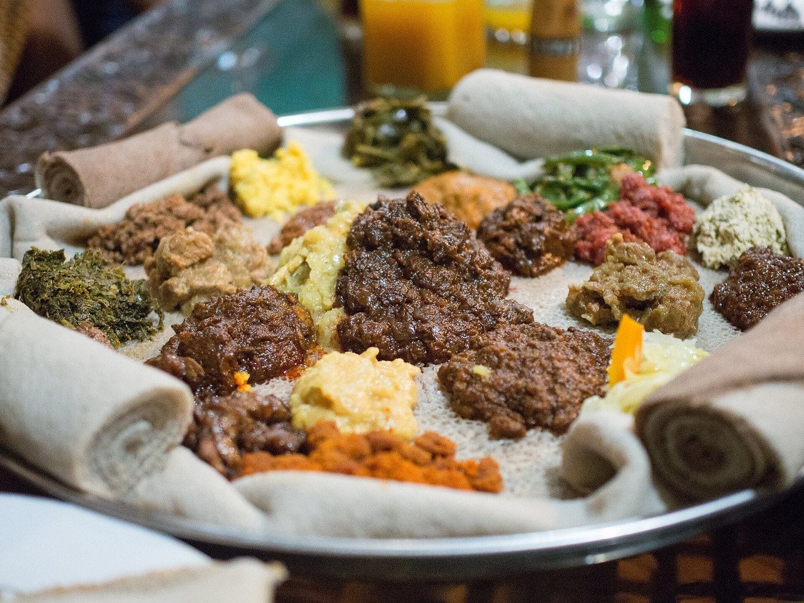
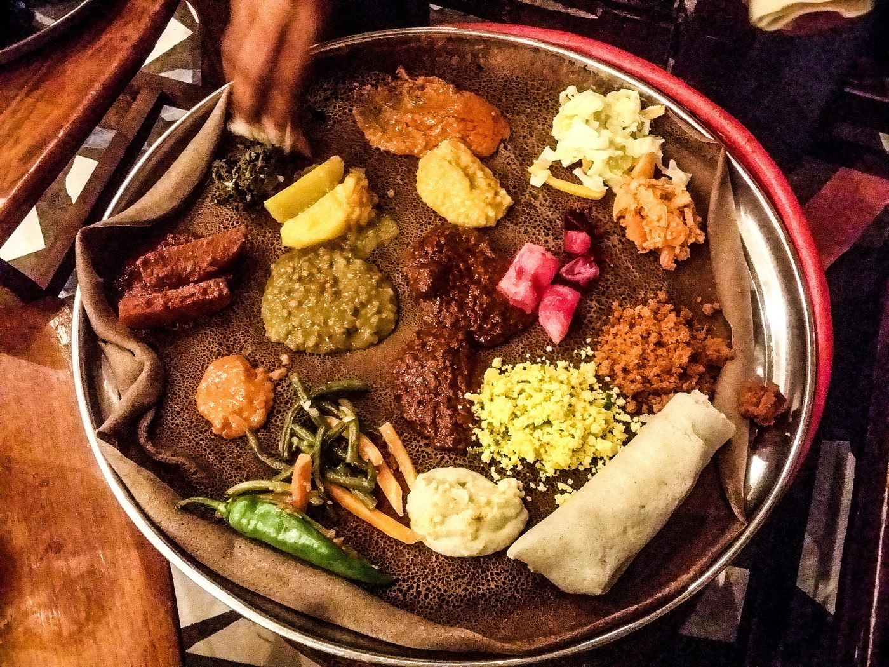
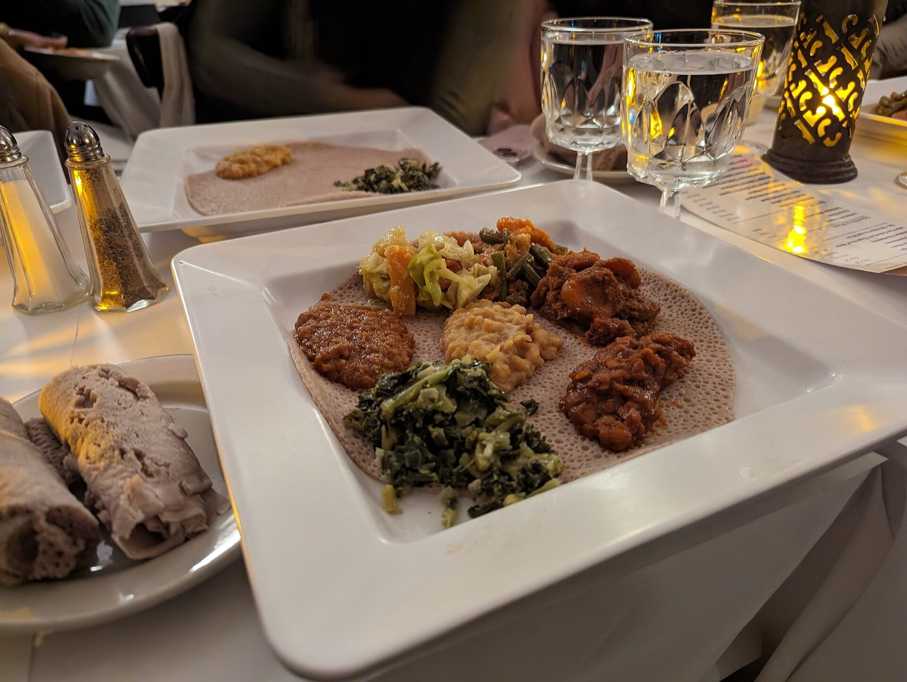

ማዕከለ ምስል
Gallery
Gallery
A taste of Selam Village









Photo credits
- Non-fasting Beyaynetu in Yod Abyssinia 1 — Jean Rebiffé, CC BY-SA 4.0, via Wikimedia Commons
- Tere siga - raw beef dish, Ethiopia 2014 — Neftalem, CC BY-SA 4.0, via Wikimedia Commons
- Tibs in Yod Abyssinia — Jean Rebiffé, CC BY-SA 4.0, via Wikimedia Commons
- Mutton tibs and injera — ShanaliCT, CC BY 4.0, via Wikimedia Commons
- Beyaynetu ethiopian food — Yonatan Solomon, CC BY-SA 4.0, via Wikimedia Commons
- Ethiopian vegetarian sampler — Sdkb, CC BY-SA 4.0, via Wikimedia Commons
- Ethiopian fasting platter — Jbinthecity, CC0, via Wikimedia Commons
- Coffee ceremony of Ethiopia and Eritrea 1 — ProtoplasmaKid, CC BY-SA 4.0, via Wikimedia Commons
- Jebena — O.Mustafin, CC0, via Wikimedia Commons
- Tej (Ethiopian honey wine) (27241999346) — cotterillmike, CC0, via Wikimedia Commons
- Injera Making — Natnael Tadele, CC BY-SA 4.0, via Wikimedia Commons